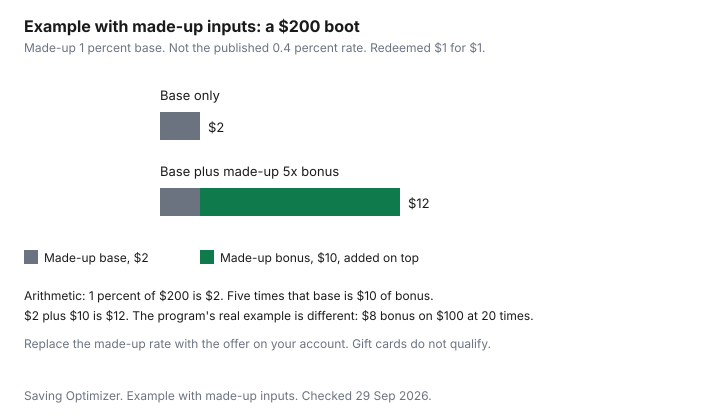

Clothing · Canada
Mark's and Sport Chek for Clothing: Triangle Rewards Timing, Work Wear and Outerwear Value
Triangle Rewards is the same program at Canadian Tire, Mark's, and Sport Chek, and the clothing trip is where people misread it. A bonus day is not automatically better than a lower ticket. Work boots are not a points problem until the CSA mark matches the hazard. Outerwear is not a points problem until the coat will be worn for more than one winter. The household version of Canadian Tire Money, including Scene+ and the hardware aisle, is the Canadian Tire Money guide. This page stays on clothes.
Key takeaways
- The Triangle Rewards column, checked 29 Sep 2026, is 0.4 percent in CT Money on qualifying purchases at Mark's and Sport Chek. Redemption on that page is $1 for $1.
- A bonus multiplier is based on that 0.4 percent base and is added to ordinary earn. The program's own example is $8 of bonus CT Money on a $100 pre-tax purchase at 20 times.
- Gift cards, taxes, and Mark's alterations do not qualify. CT Money cannot be redeemed online at Marks.com.
- Work boots are a CSA marking decision. The symbols are on the CCOHS footwear sheet, last revised 2025-02-04. This page does not rank boots.
- Price-match and price-adjustment windows for these banners are not stated here. See the retailer. Canadian Tire's own cycle is a different guide.
What Mark's and Sport Chek carry for household wardrobes
The Triangle partners page, checked 29 Sep 2026, names Mark's and L'Équipeur, and Sport Chek, as partner locations. It does not print a floor map.
For a household, the useful split is the job. Mark's is where people look for work clothes and safety footwear. Sport Chek is where they look for athletic clothes and outerwear. Both jobs can be done badly if the decision is the bonus multiplier instead of the garment. This page does not rank either banner, and it does not name a house brand.
Qualifying purchases at Mark's and L'Équipeur are merchandise, products, and services, except gift cards, taxes, Jumpstart donations, embroidery, alterations, commercial sales, tickets, layaways, delivery or shipping, and inter-store sales. CT Money is calculated on the pre-tax amount at the same base rate as at Canadian Tire, and the sentence says that rate is exclusive of discounts or promotions. Paper CT Money is not issued. The same section says CT Money cannot be redeemed online at Marks.com or L'Équipeur.com.
Sport Chek's partner paragraph says members collect on qualifying purchases at all Sport Chek locations. Exclusions there are gift cards, taxes, Jumpstart donations, refundable deposits, environmental fees, and donations at a discount. Again, the calculation is the pre-tax amount at the Canadian Tire base rate, exclusive of discounts or promotions, and paper CT Money is not issued. A later FAQ on the same partners page says you redeem in store at Sport Chek and at Mark's, and online at select stores at canadiantire.ca. Read the checkout. Do not assume a Mark's web cart will redeem, because the Mark's paragraph says it will not.
Triangle Rewards earn and bonus events
The loyalty page's Triangle Rewards column, checked 29 Sep 2026, prints 0.4 percent CT Money on qualifying purchases at Canadian Tire, Sport Chek, Mark's, L'Équipeur, and the other banners named in that column. Redemption is $1 for $1.
Membership is for a Canadian resident who is the age of majority in their province or territory. You collect by showing the Triangle app, card, or fob, or by paying with a Triangle credit card. The same page prints credit-card columns with other rates. Card earn varies. Read the terms. This guide does not rank cards.
Bonuses are on top of the base, not a replacement for it. A footnote on the loyalty page says any bonus multiplier is based on the base rate of 0.4 percent and is added to what the member would otherwise collect. The example it gives is a $100 pre-tax purchase with a 20-times multiplier: bonus CT Money of $8, from 20 times 0.4 percent times $100. Weekly personalized offers are advertised as up to 25 times. The offer states the multiplier and the items. Not every product in the store is on offer. You cannot collect paper CT Money on bonus offers. Not all items earn or redeem. Bonus CT Money may take up to five weeks to post, on the terms printed with that footnote.
Waiting for a bonus is rational only for a purchase you have already decided. If the boot is the right CSA mark and the right fit today, and the bonus is a maybe next month, the month of the wrong footwear is the expensive part. If the coat can wait and the offer is loaded on that coat, run the footnote's arithmetic on your pre-tax total and compare it with a lower ticket available now. The chart below uses made-up inputs on purpose, so it cannot be read as the 0.4 percent rate.
| Rule | What the pages say |
|---|---|
| Earn basis | Pre-tax amount of qualifying merchandise. Same base rate as Canadian Tire. Loyalty column: 0.4 percent |
| CT Money value | $1 redeems as $1 of eligible merchandise. Not all items qualify |
| Bonus events | Multiplier applies to the 0.4 percent base and is added to ordinary earn. Example on the page: $100 pre-tax at 20 times is $8 bonus. Weekly offers advertised up to 25 times |
| Excluded at Mark's | Gift cards, taxes, embroidery, alterations, and the other exclusions in the partner paragraph. No online redemption at Marks.com |
| Excluded at Sport Chek | Gift cards, taxes, refundable deposits, environmental fees, and the other exclusions in that paragraph |
Work wear and safety footwear value
Points do not pick a boot. The Canadian Centre for Occupational Health and Safety fact sheet on safety footwear, last revised 2025-02-04 and checked 29 Sep 2026, says you choose footwear for the hazard and refers to CSA Standard Z195-14 (R2023), or another standard your jurisdiction requires.
A green triangle is sole puncture protection with a Grade 1 protective toecap, the mark CCOHS ties to heavy industrial work where sharp objects such as nails are present. A yellow triangle is Grade 2 with puncture protection. A blue rectangle is Grade 1 toe protection without a puncture-resistant sole. A grey rectangle is Grade 2 without puncture protection. The other patches, electric shock, static dissipative, conductive, metatarsal, and chainsaw, are in the table on the safety-boot guide. Buy the mark the job needs. A cheaper boot with the wrong patch is not a saving.
Fit notes on that sheet: try boots on around midday, because feet swell. Toes about 12.5 mm from the front. Do not expect the boot to stretch. Wear the socks or arch supports you use at work, and ask the manufacturer if an insert changes the protection. Lace fully. High-cut boots support the ankle. Inspect for cracks, breaks, and exposed toe caps. Replace a boot after a puncture or an impact even when you cannot see the damage. Those are workplace instructions, not a style guide. Sidewalk winter boots, which are a different purchase, are the winter-boot guide.
Whether the employer pays, reimburses, or gives an allowance, and whether that payment is taxable, is not a Triangle question. Employees cannot deduct the boots themselves under the line in guide T4044. The allowance rules are on the safety-boot page, from T4130. Not tax advice.
Price matching and adjustments
This guide does not cite a Mark's price-match window, a Sport Chek price-match window, or a price-adjustment window for either banner. See the retailer, with the receipt.
The Canadian Tire sale-cycle guide describes Canadian Tire dealer pricing. A dealer policy is not a Mark's policy because the rewards program is shared. The price-adjustment guide explains the difference between matching someone else's price at the till and asking for your own later drop. Use the words the store's page uses.
If you are comparing two tickets inside the Canadian Tire family, compare the merchandise price before points. A 0.4 percent earn on a $200 pre-tax boot is 80 cents. A bonus can be larger, and the program's $100 example shows an $8 bonus at 20 times before the ordinary earn is added. Neither figure repairs a boot that is the wrong grade. Do not buy a second pair because the offer is loaded.
Clearance timing for outerwear
Outerwear is seasonal, and the Competition Bureau's ordinary-price publication says a seasonal product may be sold or offered for a shorter period than a year-round product. The volume and time tests then apply to that shorter period.
A "regular" price that existed for a few weeks in October is a thin reference in March. This page does not cite a Sport Chek or Mark's clearance calendar, and it gives no percent for coats. End-of-season timing, without those percents, is the best-time-to-buy guide. How many winters the coat should survive is the coat guide.
A bonus event on a coat you will wear for one week of a mild winter is still a coat you did not need. A full-price coat in September that you will wear for several winters can beat a clearance coat in April that spends the warm months in a closet. Put the wears in the decision. Then, if you still want the coat, look at whether a loaded offer changes the pre-tax total by more than the difference you would get by waiting. If you cannot see the offer's multiplier, you do not have a bonus. You have a rumour.
| Check | What to look for | What this is not |
|---|---|---|
| Green triangle | Puncture-resistant sole and a Grade 1 protective toecap | A warmth grade or a brand rank |
| Yellow triangle | Puncture protection with a Grade 2 toecap | A substitute for Grade 1 where the site requires Grade 1 |
| Blue or grey rectangle | Toe protection without a puncture-resistant sole | Enough on a site with nail or puncture risk |
| Fit | Midday try-on, about 12.5 mm of toe room, work socks on | A plan to break the boot in by stretching it |
| Outerwear timing | Cost per winter, then any offer you can read | A published Sport Chek clearance percent. None is cited here |

Sources
- Triangle Rewards loyalty page, triangle.canadiantire.ca, checked 29 Sep 2026. Triangle Rewards column: 0.4 percent CT Money at Sport Chek, Mark's, and the other banners named there. Redemption $1 for $1. Bonus example: $100 pre-tax at 20 times is $8 of bonus CT Money, added to ordinary earn. Weekly offers advertised up to 25 times.
- Triangle partners page, checked 29 Sep 2026. Mark's and L'Équipeur exclusions include gift cards, alterations, and embroidery. No online redemption at Marks.com. Sport Chek exclusions include gift cards. Earn is the pre-tax amount at the Canadian Tire base rate. FAQ: redeem in store at Mark's and Sport Chek, and online at select canadiantire.ca stores.
- Canadian Centre for Occupational Health and Safety, safety footwear, last revised 2025-02-04, checked 29 Sep 2026. CSA Z195-14 (R2023). Green triangle, yellow triangle, rectangles, fit notes including 12.5 mm.
- Competition Bureau, Ordinary Price Claims, 16 October 2009, checked 29 Sep 2026. Seasonal products can use a shorter period for the volume and time tests. No Mark's or Sport Chek price-match window is cited. See the retailer.
Frequently asked questions
How does Triangle Rewards work at Mark's and Sport Chek?
You collect electronic Canadian Tire Money on qualifying pre-tax purchases when you show the app, card, or fob, or pay with a linked Triangle credit card. The loyalty page's Triangle Rewards column, checked 29 Sep 2026, is 0.4 percent at Mark's and Sport Chek, and redemption is $1 of CT Money for $1 of eligible merchandise. The partners page says gift cards, taxes, and, at Mark's, alterations and embroidery do not qualify. Paper CT Money is not issued on these purchases.
When are bonus events worth waiting for?
When the offer is on an item you were going to buy, and the CT Money is worth more than buying now at a lower ticket you can verify. The program says a bonus multiplier is based on the 0.4 percent base and is added to what you would otherwise collect. Its example is a $100 pre-tax purchase at 20 times, which is $8 of bonus CT Money. A straight sale that cuts the ticket by more than the bonus can still be the better price. Read the offer. The weekly line that says up to 25 times is not a promise that every item is on offer.
Does Mark's give price adjustments?
This guide does not cite a Mark's or Sport Chek price-adjustment window or a price-match window. See the retailer. The Canadian Tire sale-cycle guide is about Canadian Tire dealers. Do not copy that window onto a Mark's receipt. If you already paid and the same banner drops the price, ask the store with the receipt rather than assuming the hardware rule applies.
What should I check on work boots at Mark's?
The CSA mark for the hazard, not the points. CCOHS, last revised 2025-02-04, says a green triangle is sole puncture protection with a Grade 1 protective toecap, a yellow triangle is Grade 2 with puncture protection, and the coloured rectangles are toe protection without a puncture-resistant sole. Try boots on around midday, with the socks you wear at work, and about 12.5 mm of toe room. The full symbol list is the safety-boot guide.
Can I combine Triangle with other offers?
Base earn and a bonus are designed to sit together: the footnote says the multiplier is added to ordinary earn. Gift cards are excluded from qualifying purchases at both Mark's and Sport Chek, so a discounted gift card does not earn CT Money when you buy the card there. Mark's alterations and embroidery are excluded too. A portal or another coupon still has to say it combines. This page does not rank those offers.
Researched and drafted with AI assistance and fact-checked against official Canadian sources. How we create content.
Disclosure: Discounted retailer gift cards are an offer type. Saving Optimizer may earn a commission if a partner link is added later. No gift-card partnership is claimed. A gift card does not change a tag, a return window, or a points rule. Education only.